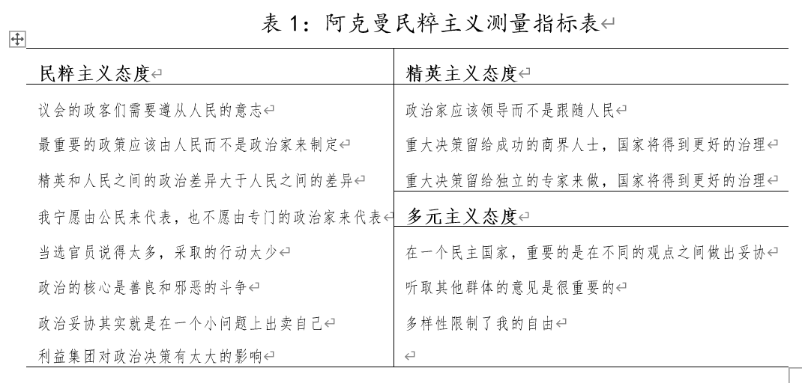
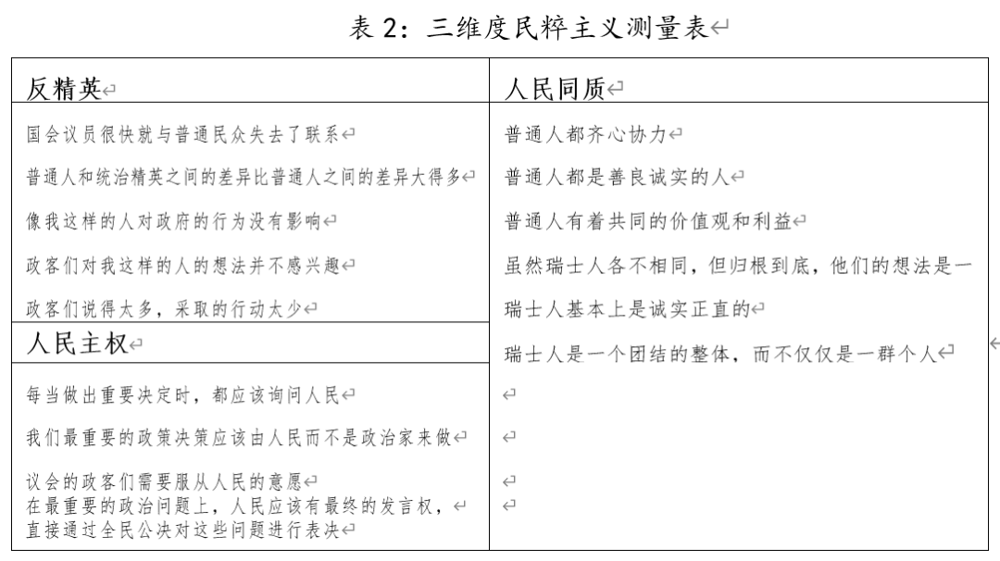
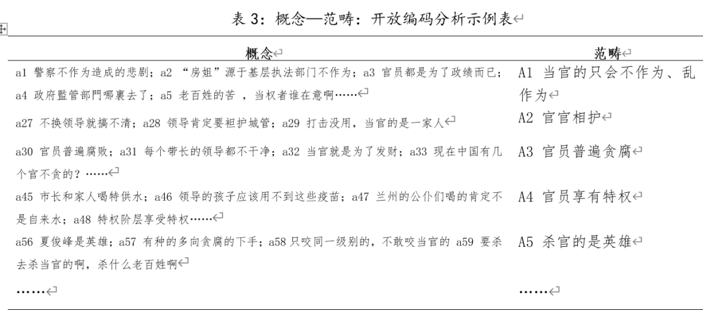
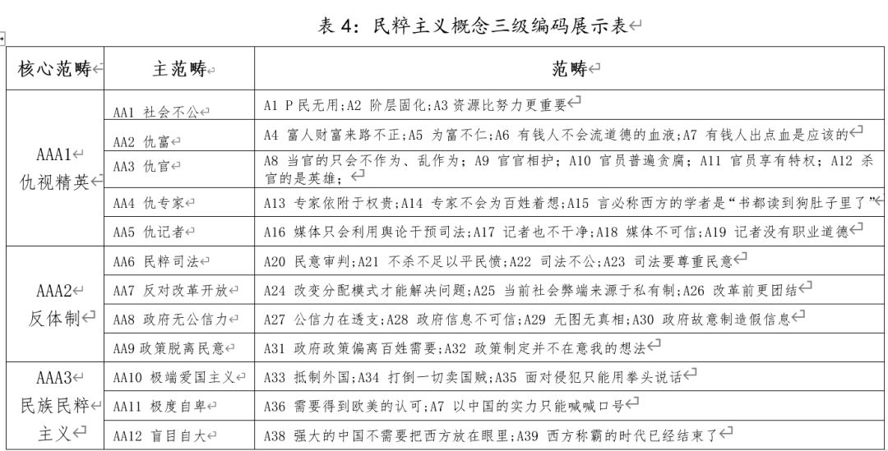
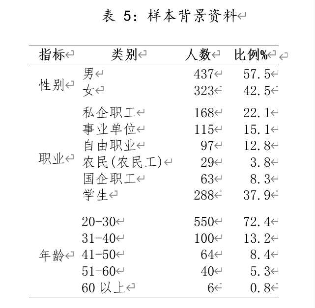
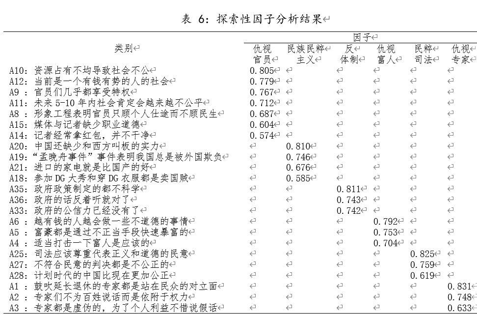
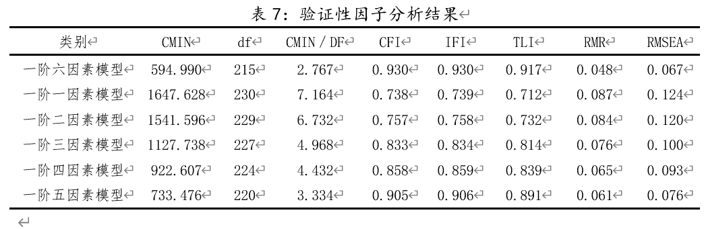
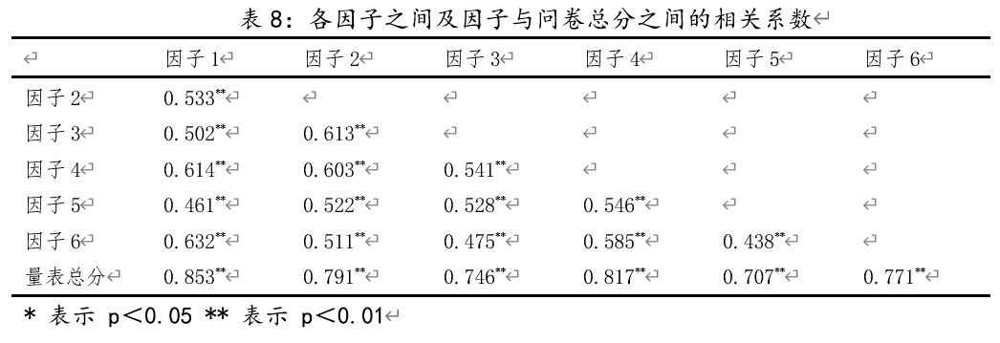
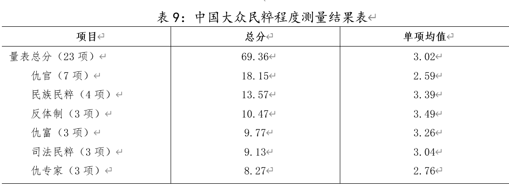
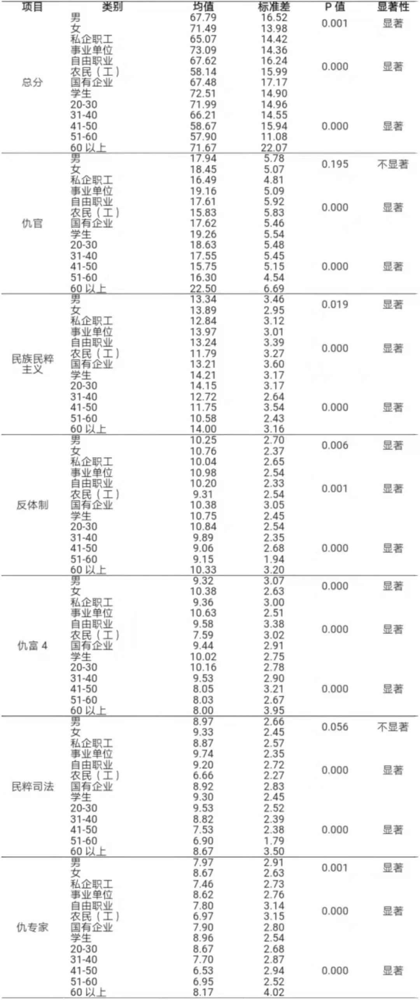

收录于合集

简 介
** 【作者】** 程同顺（1969-），南开大学周恩来政府管理学院政治学系教授、博士生导师、副院长，主要研究方向为政治学理论和中国农村政治；史猛（1991-），南开大学周恩来政府管理学院政治学理论专业博士研究生，主要研究公共行政和农村治理。
【编辑】 杨 洋
【来源】 《理论与改革》2020年第1期
内容提要
对民粹主义的内涵和实证研究的分析表明，民粹主义是一个可以测量的概念。通过对中国民粹主义的表现形式和网络民粹话语的梳理，形成了一个包含仇视官员、民族民粹主义、反体制、仇视富人、民粹司法和仇视专家等6个维度的23个指标的民粹程度量表。运用这个量表考察中国社会各阶层样本，发现中国在整体上并不具备明显的民粹主义特征。 关 键 词： 民粹主义；民粹程度量表；民粹测量
正 文
近十年来，全球范围内的发展危机导致民粹主义成为了普遍议题，只是根据所反映危机的不同演变为多幅面孔。不同于境外民粹主义以政党政治和政治运动作为主要表现形式，当下中国的民粹主义更多地表现为一种多维交互的社会思潮，仇官、仇富以及反智，盲目排外等都是具体表现形式。从时间维度来看，作为一种社会思潮的民粹主义在中国呈现出一种愈发活跃的态势。人民论坛问卷调查中心历年对中国社会思潮的调查报告显示，自2011年以来民粹主义一直属于“最受关注的社会思潮”且排名逐年上升，2011年位列第9位，2012年位列第8位，2013年位列第7位，2014年和2015年均列第4位，而到了2016年，“民粹主义”则直接跃升到第一位。中国学术界对民粹主义也表现出极大热忱，相关研究在近几年大幅升温。现有研究主要集中在政治学和传播学领域，研究内容包括民粹思潮活跃的成因，具体的表现形式，对中国政治民主以及社会治理的潜在危害，以及消除民粹思潮泛滥的途径等方面，其中网络民粹主义是研究的重点领域。应该说，现有研究已经在很大程度上对民粹主义做了学理剖析。然而，很少有研究从定量层面研究民粹主义，如普通大众的民粹程度到底如何？作为一个多维概念，不同人群在不同维度上的民粹主义态度又是如何分布的？对这些微观层面的问题做出回答，对于民粹主义的进一步研究是十分必要的。
一、相关研究回顾与述评
民粹主义是不是一个可以测量的概念，这是本章首要解决的问题。通过对民粹主义概念的剖析和实证研究的梳理从理论和经验两个角度提出本研究最基本的前提假设：民粹主义可以实证测量且需要开发适合中国情境的量表。 （一）定义与理论 民粹主义的含义历来存在很大争议，在于其是一个缺少独立内核的概念（a thin-centered ideology），在不同时空、场景中依附于不同意识形态形成繁多的表现形式。超越代议制而崇尚直接民主是在政治领域的表现；盲目排外则是与民族主义合流的体现；在经济层面，民粹主义者则要求均平富，而减税和增税都是其具体手段。正因为如此，测量微观层面上的个体民粹主义程度就成为了一个难题。不过，近年来学界开始放弃按照特征要素，如组织结构、社会基础、政治体制以及地区特色来狭隘地定义民粹主义，而是通过寻求一种跨地区且更加广泛的定义来达成共识：民粹主义是一系列关于世界、政治、民主以及话语表达的具有内核缺失特征的意识形态，强调用“摩尼教式”（二元论）的方法看待政治世界，从而把人们分成“善良的民众”和“邪恶的精英”两大部分，并由此衍生出了反精英、反体制、反多元、崇信不受限制的人民主权以及人民同质且善良等具体价值观念。因此，当民粹主义被视为一组政治意识形态且具备边界明显的多维结构时，微观层面的个体民粹程度就成为了一个可以测量的变量。 （二）相关实证研究 通过上文分析可知，民粹主义作为一个由多个一阶维度构成的高阶概念，在理论上是可以衡量其程度的。那么，从实践的角度来看，又有哪些经验性的实证探索呢？比较而言，国外学界对民粹主义的测量已经进行了有益尝试，大体上可以分为对个人（领导人）民粹程度和大众民粹程度测量两个方向。前者主要采用文本分析的方式，对领导人公开发表的话语或政党宣言进行编码分析与比较，以求获得领导人或政党的民粹态度与程度。其中重点研究对象是拉美地区领导人和政治精英，这与拉美政治家工具化“民粹主义”是相关联的。后者主要采用问卷的形式在微观层面对大众（尤其是选民）的民粹程度做出测评，这也是本文所采用的方式。 我们于2019年1月分别以“Populist attitude”和“Populist AND Measurement”为关键词，在Web of Science电子期刊数据库中搜索关于民粹主义程度测量的文献，发现共有6篇。进一步整理发现，早在上世纪中叶，就已经有了在微观层面上测量个体民粹主义的探索，但囿于当时所测内容相对于当下已然成为了“过时的”概念。而真正意义上在微观层面对大众民粹态度做出测量的研究始于杨百翰大学的柯克•霍金斯教授（Kirk Hawkins），此后的研究也多以其成果为蓝本，并且已经开发出了多维度的量表，进一步保证了民粹主义程度的测量准确度。具体来看，霍金斯在其研究中首先对何为民粹主义做了一个必要界定，即民粹主义是一套关于世界、民主以及政治表达的具有内核缺失特征的意识形态。其次，依托较为明确的定义通过提取关键元素的方式开发出了包含四个指标的民粹程度量表，分别是：政治核心是善良和邪恶的斗争；国会的政客们需要遵循人民的意志；少数特殊利益集团的势力阻碍了我们国家的进步；最重要的政策应该由人民而不是政治家来制定。此外，为了衡量民粹主义话语的独特性，在调查中还加入了精英主义和多元主义两个与民粹主义相对照的模块。精英主义包括“当选的官员少说多做将会对国家有更大的帮助”，“人们所谓的政治妥协其实就是在一个小问题上出卖自己”，“如果把决定权留给成功的商人，我们的政府将运行得更好”以及“如果让非选举产生的、独立的专家而不是政治家或人民来做决定，我们的政府将运行得更好”四个指标。多元主义包括“民主的本质是在不同观点之间达成妥协”，“当我们的对手提出新的具有挑战性的观点时，我们可以通过倾听来学习”以及“自由取决于多样性”三个指标。最后，利用上述量表对2052名居民测评，得到了美国大众具有较高民粹主义倾向的结论。正是由于霍金斯等人创造性地开发了一套衡量民粹程度的量表，此后对微观层面个体民粹程度测量的研究多以此为蓝本并加以改进。比如，阿姆斯特丹自由大学的艾格尼丝•阿克曼等人为了避免把测量民粹程度滑向反体制情绪的误区，根据民粹主义内涵的多个特征把霍金斯量表由四个指标扩展到八个指标，以便能够更加全面地衡量民粹程度。同时，同样选择精英主义和多元主义作为对比模块，并且作出了一定的修改（详见表1）。再如，苏黎世大学萨斯基亚·波林·鲁斯等人在测评拉丁美洲议会精英的民粹程度时以艾格尼丝•阿克曼扩展后的量表作为基本框架，只是根据所调查客体的特殊性对量表做了适应性调整。此外，瑞士洛桑大学的劳伦特·伯纳德也在很大程度上借鉴了霍金斯量表，同样选择四个指标来测量民粹程度：重要的政治决策应该由人民而不是政治家来做；如果更多地考虑民众的意见，而不是精英的意见，瑞士将从中受益；政客们更多地考虑自己的利益，而不是人民的利益；政客们对像我这样的普通人的意见并不感兴趣。上述研究，不论是指标开发还是测量结果，亦或是利用因子分析的方法检验量表的效度，不仅在经验上进一步证明民粹主义可以测量的判断，更是为本文提供了方法上的借鉴。然而，上述研究存在一个比较明显的漏洞，即用单一维度测评多维结构的民粹主义。应该看到，单一维度量表是不能很好地测量民粹程度的，因为它没有考虑到民粹主义意识形态中不同指向但又相互关联的方面所表现出的不同政治倾向。因此，苏黎世大学的舒尔茨•安妮等学者开发了一个三维测量量表，其依据在于众多研究将反精英主义态度，对不受限制的人民主权的强烈信仰，以及对人民同质性和德性等三个政治理念视为民粹主义意识形态基石的归纳。因此，舒尔茨•安妮在研究中假设民粹态度是一种潜在的二级结构，由三个不同的维度构成：反精英主义态度，对不受限制的人民主权的偏爱，以及对人民同质性和美德的信仰，对三种观点支持程度的界定可以达到测量民粹程度的目的。基于上述论证，以前述量表为基础，他们开发了一个由15个指标构成且分成三个维度的量表（详见表2）。需要指出的是，舒尔茨•安妮的量表虽然注意到了细分维度的问题，但却走向了指标泛化的误区，有些指标指向性并不高，很难作为测量民粹态度的指标，比如，“对人民同质性和美德的信仰”维度中的“瑞士人基本上是诚实正直的”这一指标是不能很好地指向民粹主义态度的。换句话说，一个瑞士人认为瑞士国民基本上是诚实正直的并不能等同于他持有很高的民粹主义态度。从整体上看，国外学者对大众层面民粹程度的实证研究在经验角度上证明了其是一个可以测量的概念，并且开发和进一步完善了测评模型。然而，由于民粹主义具有“变色龙”属性，在不同时空中与不同意识形态结合会表现出不同的表现形式，中国与西方在历史人文、政治制度、社会环境等方面的差异导致中国的民粹主义研究对象在很大程度上区别于外部经验。也就是说，国外研究的具体维度划分以及指标设计对于开发中国情境下大众层面民粹程度量表的借鉴意义有限，需要根据中国民粹主义的特征、形态与范畴设计符合中国实际的量表。就中国而言，采用实证方式研究民粹主义的成果并不多，并且集中在研究具有民粹特征的社会事件背后的（新）媒体传播模式、演化机制、话语形态等领域，一般采取个案研究的方式。涉及到个体民粹程度的文献只查到两篇，一是利用半结构式深度访谈对特定目标个体收集民粹态度的研究，得出大学生具有“未民主先民粹倾向”的结论。然而，由于作者采用目的抽样选取的是具有民粹特征的样本，加之样本数量有限，未对大样本进行探讨，因此，我们很难利用该研究结果去评估大样本层面上的民粹程度。另外一篇是人民论坛问卷调查中心所作的《中国公众的民粹化倾向调查报告（2012）》，通过调查问卷的方式测试受访者在爱国情结、怀旧情结等八个核心特征和政治参与兴趣等六个非核心特征上的表现情况，来了解中国民众的民粹化程度。该报告认为，近一半的受访者具有民粹化特征，其中三成属于民粹化特征显著者。毫不夸张地说，这是国内唯一一篇采用定量的方式测评大众民粹程度的研究，具有着里程碑的意义。但是，该调查报告所使用的问卷也存在着“民粹扩大化”的问题。举例来看，报告中把“爱国情绪高低”作为了衡量是否具有民粹特征的核心指标，由此，“为中华民族灿烂的文明感到骄傲”，“反抗外国侵略是中国人与生俱来的使命”以及“当外国对中国形成威胁时，人们应彻底放弃个人利益团结对外”等具体问题就成为了民粹特征的重要加分项，这显然是不合适的。当民族尊严和利益面临危机或受到侵害时，民众最原始的爱国情怀就会油然而生，这种爱国情绪其实再正常不过了，只有超越了应有的边界和规则才会沦为民粹的滥觞。因此，在指标“扩大化”的情况下，测评结果失真的情况就比较明显，中国民众的民粹态度并不一定能够达到“一半的受访者具有民粹化特征，三成属于民粹化特征显著者”的程度。
 中国存在着民粹主义现象这是个公论，但公众的民粹态度到了何种程度，因为缺乏有效的测量工具而难以把握，不仅会影响相关研究的进展，也不利于对民粹主义的治理与驯化。因此通过系统的定性与定量研究，开发中国情境下民粹程度量表非常必要，这也正是本研究的目的所在。
** 二** 、 研究设计与实施
中国情境下民粹程度研究仍然处于探索阶段，缺少一个明确且统一的结构维度构成，那么，通过文献梳理和网站帖子爬梳来归纳并概念化中国情境下民粹主义的具体表现特征，可以提炼用于组成初始量表的指标，并以此为基础编制调查问卷。 （一）基于文献梳理的维度生成 几乎所有研究都指出，民粹主义是一个缺少核心价值的概念，在不同时空与不同政治立场和意识形态相结合就会演化出多样的表现形式，进而形成了诸多具体维度。相关文献对民粹主义维度进行了识别研究，比如，保罗·塔格特以世界范围内的典型民粹主义运动为分析样本总结出民粹主义具有“敌视代议制政治；把所偏爱的群体作为理想化的中心地区并以此作为辨识自身的依据；作为一种思想意识缺乏核心价值；是对严重危机的强烈反应；因其自身的矛盾性而具有自我局限性；像变色龙一样能够随环境的变化而变化”等六个核心特征。应该看到，上述六项特征基本能够在抽象层面上覆盖民粹主义的维度，只是过于原则而不能体现出中国情境下的具体化和准确化。那么，国内学者对中国民粹主义维度的研究成果则是本研究指标生成的重要来源。陶文昭认为，中国民粹主义可划分为三仇（仇官、仇富、仇专家）和两求（求民生、求民权）共5个维度。李良荣认为中国民粹主义具有三个动向，分别是“民粹主义与民族主义合流”，“民粹主义与仇视思潮的合流”以及“民粹主义围击基层”，其中，仇视思潮又可以分为“仇富”“仇官”“仇精英”三个具体指向，共计5个维度。董振华把民粹主义定义为一种极端化的西方民主，具有“极端民族主义”、“网络暴力主义”、“无政府主义” 、“虚无主义”以及“民粹主义和商业目的融合”五个表现形态。当前，中国民粹主义尚未具备明显的规模和社会影响力，表现形式上区别于典型的民粹主义而更多地借助于网络媒体来表达不满，网络成为了中国民粹主义活跃的主阵地。因此，一些研究还提出了网络媒体情境下特定的民粹主义维度。夏忠敏认为，网络的虚拟特征无限放大了民粹主义的非理性和极端化，基于二元对立的思想、采用道德批判的形式以偏概全地对各类精英作“有罪推定”：官员腐败、富人为富不仁、学者丧失独立人格的“革命”话语；以网络媒体为载体建立“第二世界”淡化身份意识，毫无拘束地宣泄情绪，进行民粹主义狂欢的娱乐话语；以及超越理性的界限以国家利益和民族情感作为情绪宣泄的幌子，煽动对立情绪，扰乱社会秩序的民族主义话语是网络民粹主义的表现形态。郑振宇认为，网络上的民粹主义已经超越了思潮的范畴，通过“人肉搜索”、“扣帽子”甚至“打棍子”等网络暴力行为在表达不满情绪的同时掌握网络话语权，俨然发展为网络民粹主义运动。并且，网络民粹主义具有强烈的溢出效应，当条件成熟时网络民粹运动就会走入现实，在虚拟与现实的互动过程中释放出巨大的能量，进而影响传统政治生态，促使政府决策更加贴近于民意。更有甚至，官方正常执法和司法活动也会出现被非理性的网络民粹裹挟的危险，形成了极具中国特色的民粹主义司法现象：利用网络平台进行人民审判。应该看到，网络民粹主义只是民粹情绪发酵空间的延伸，并不是具有单一且明确指向的维度，依托于网络的民粹表现形式能够丰富中国情境下民粹主义的维度。当前中国的民粹主义思潮虽然不同于外部经验，但反体制的核心特征同样是具备的，只不过表现出特殊的形式，主要是反对现行精英体制导致的制度歧视和权利不平等，并且具有反对改革开放的特征。 （二）基于网络跟帖的维度生成 在现实情境下，中国民粹主义的生成、呈现以及发展都会受到诸多因素的制约，并未演化为典型的民粹主义形态。然而，由于网络所具备的开放性、互动性以及匿名性等特点比较契合民粹主义的底层叙事和非理性等特征，给予了中国民粹主义更为优越的发展空间。可以说，网络是中国民粹主义最活跃，表现最为极致的地方。基于这样的认识，本阶段主要采用网上观察的方式收集民粹话语资料，即进入“天涯论坛”网站观察网民对30件具有典型民粹化倾向的热点舆论事件的讨论与互动，并对相关发帖和跟帖进行本文记录。由此获得的文本不仅在形式上更接近于访谈，且具有较高的信度，能够最大限度地发掘中国民粹主义的维度。本阶段采用扎根理论的研究方法对原始资料进行剖析和编码，分为开放性编码、主轴性编码和选择性编码三个步骤。首先，开放性编码，对30份文本资料以“见实编码”共识别出311条概念标签（剔除重复项），并在此基础上抽象出39个范畴（A1—A39）；其次，主轴性编码，根据范畴间潜在逻辑关系将开放性编码获得的39个范畴展开进一步的归并，最终形成12个主范畴（AA1—AA13）；最后，选择性编码，在对39个范畴和12个主范畴进行逻辑梳理的基础上，通过聚类分析得到3个核心范畴（AAA1—AAA3）（见表3 、表4）。在完成上述编码过程后，利用2018年12个民粹舆论事件进行理论饱和度检验，结果发现新的概念都能被现有的39个范畴覆盖，并未提取出新的范畴，可证明本研究具有较高的理论饱和度。 （三）问卷设计及测量 根据上述两个阶段的梳理，我们可以采集到测量大众层面民粹主义程度的12个测项，以此为基础编制调查问卷。其中有两点需要强调：一是测量问项具有明确的民粹主义色彩而不是中立的观点陈述。这主要源于民粹主义具有明确的价值倾向，同时，民粹主义平时更多地处于一种“隐蔽”的状态，要想更加准确地测量民粹主义程度就必须要营造一个容易激发民粹态度的环境。如日常生活中民众对官员的仇视并不严重，但听到官员腐败、享受特权时就会产生明显的对立情绪。二是具体测量问项的设计对现有研究成果多有借鉴。虽然对于大众民粹主义态度测量的研究较少，但对于各个维度（测项）的研究是比较成熟的。比如，在“仇富”这一维度上，“对富人的态度”的测量可以参考《“仇富心理”何以可能——对北京市和杭州市问卷调查资料的分析》一文。问卷包含两部分，第一部分是对大众民粹主义态度的测项，共计36项，采用李克特5点量表，其中“1”代表“非常同意”，“5”代表“非常不同意”。第二部分为背景资料，包括被试者的性别、年龄、职业等基本信息。 问卷采取线上便利抽样的方式进行发放，主要利用微信“金数据”程序在朋友圈、微信圈中发送，共计回收760份有效样本。经统计，样本中男性受访者比例为57.5％，略多于女性，主要群体为年龄在20-40岁间的学生和私企员工（见表5）。
** 三、量表开发与验证** ****
本研究使用SPSS和AMOS软件对所有数据进行统计分析，共分成五个步骤：第一，利用线上回收的前360份（指标10倍量）有效样本开展项目分析和信度分析以实现第一轮纯化；第二，在第一轮纯化的基础上利用前360份有效样本进行探索性因子分析，通过删除负载低和交叉负载过高的指标实现第二轮纯化；第三，利用剩余400份有效样本进行验证性因子，确定量表结构及测项；第四，利用全部760份样本对纯化后的量表进行信效度分析，进一步评估最终量表的可靠性和有效性；第五，利用全部760份样本进行民众民粹程度的实际测评应用分析，以检验量表在实际应用中的有效性。  （一）项目分析和信度分析 本阶段利用SPSS软件对360份样本分别进行项目分析和信度分析，目的在于通过删除鉴别度不高、与总分相关系数不高以及信度不达标的指标来纯化指标。首先，在计算总分的基础上依临界分数（100和117）分出高分组和低分组，通过独立样本T检验发现，所有指标的临界比值达到显著水平，但29题的t值虽然达到显著水平（0.024），但其检验统计量极低（t=2.280，p=0.024），作出了删除处理。[28]其次，采用相关分析法探求指标与整体量表的同质性并删除同质性不高的指标，发现，第13、22、24、26指标与量表总分之间的相关系数分别为0.305、0.382、0.308、0.394，低于0.4的标准考虑删除。最后，进行信度分析，通过对Cronbach’s α系数和指标与整体相关系数（0.400标准）的考察发现，在删除掉第13、22、24、26、29项后能够提升量表信度，因而考虑删除这5个指标。综上，经过第一轮纯化可以得到一个包含31个指标的量表。 （二）探索性因子分析 在第一轮纯化的基础上对剩余31个指标采用主成分方法提取因子，并利用最大方差法进行正交旋转的方式开展探索性因子分析。检测发现，第16、17和23三个指标在某个因子上的负载不足0.500，第7、31、32、34共4个指标存在较为严重的交叉负荷，都考虑删除。此外，第30指标虽然满足负载标准，但囿于和因子1上的其他指标表述内容存在较大意义偏差，考虑删除。最后，利用剩下的23个指标再进行探索性因子分析，结果显示ＫＭＯ值为0.928，Bartlett球形度检验呈现显著性水平，23个指标清晰地负荷在6个因子上，每个指标的因子负荷都大于0.500，交叉负荷小于0.400（见表6）。然后，对量表整体和单个因子再次进行信度分析。其中，六个因子的Cronbach’s α系数依次为0.891、0.808、0.850、0.843、0.741和0.820，量表的总体信度为0.934，较好地满足了量表信度要求，且最终形成了一个包含23个指标六个维度的民粹程度量表。 （三）验证性因子分析 为进一步检验中国情境下大众层面民粹程度量表的稳定性，本阶段采用AMOS软件利用剩余400份样本数据对纯化后的23个指标进行验证性因子分析。依据探索性因子分析结果展开如下分析处理：第一，以探索性因子分析得出的6个因子构建一个六因素模型；第二，将23个指标归于一个因子，统称为民粹主义态度，为一阶一因素模型；第三，将民族民粹主义作为独立因子，其余5个因子合并在一起为一个因子，考察民众对内民粹态度，为一阶二因素模型；第四，将仇富、仇官、仇专家合并为一个因子，民粹司法和反政府体制合并为一个因子，分别考察民众的仇视态度和反体制态度，并连同民族民粹主义形成一阶三因素模型；第五，将仇富、仇官、仇专家合并为一个因子以考察民众的仇视态度，连同民族民粹主义、民粹司法和反政府体制形成一个一阶四因素模型；第六，将民粹司法和反政府体制合并为一个因子以考察反体制态度，连同仇富、仇官、仇专家和民族民粹主义形成一个一阶五因素模型（见表7）。 （四）信度和效度检验 为进一步评估量表6个维度的可靠性与有效性，利用760份样本以考察量表整体以及各个维度的Cronbach’s α系数的方式进行信度检验，发现，量表整体以及因子1、因子2、因子3、因子4、因子5、因子6、、6个因子的Cronbach’s α系数分别为0.939、0893、0.800、0.863、0.867、0.755、0.807 ，均大于0.7的可接受标准。由此，可以证明中国情境下大众层面民粹程度量表具有较高的信度。本研究的量表效度主要从内容效度和建构效度两个方面考察。一方面，一个量表要具备较好地内容效度就必须满足两个条件，其一是全部测量指标均在确定的内容范围内，其二是测量指标应是已界定内容范围的代表性样本。本研究开展的以下四项工作能够尽可能地保障量表的内容效度：一是通过对民粹主义定义和实证测量等相关文献的梳理，从理论和实践层面证实大众层面的民主主义可以测量的判断；二是对中国情境下民粹主义表现形式的文献梳理，获取理论层面的维度划分依据；三是针对中国民粹主义在线上更加活跃的特点，利用扎根理论对网络民粹主义语言进行爬梳，尽可能地扩展中国情境下大众层面民粹主义表现形式的维度和内容；四是测量问项设计借鉴了现有研究成果。因此，可以判断出本研究开发的中国大众民粹程度量表具有可观的内容效度。 另一方面，一个量表能够抽取共同因子且各因子与量表整体之间具备高度相关以及各因子之间具备中低度相关的关系，则表示具有良好的效度。通过前文分析可知，本量表能够抽取6个共同因子，且各因子与总分呈现高度相关，相关系数均高于0.700；而各因子间呈现中低度相关，相关系数普遍低于0.600（见表8），说明各因子之间既相互独立，又有各自相应的归属，本问卷具有良好的建构效度。 （五）量表的实际应用测评 为进一步验证量表在实际应用中的区分效度，本研究利用独立样本T检验和方差分析的方法对总样本中性别、年龄和职业在量表总体和六个因子上的差异性进行验证。首先，统计量表和各因子的总分和平均分，了解样本的民粹程度和分布情况，发现除了在仇官和仇专家两个因子上平均分低于3以外，其余均在3以上，处在相对不认可的半区，证明样本的民粹程度并不高（见表9）。其次是通过对不同性别的样本对量表总体和各因子进行独立样本T检验，发现不同性别样本在民族民粹主义、反体制情绪、仇富态度、仇视专家以及量表总体上均存在显著差异（p＜0.05），且女性样本在总体和各维度上的认可程度均低于男性样本。最后，以样本年龄和职业为分组，通过ANOVA差异性分析发现不同年龄段和不同职业的样本在总分和各维度上的认可程度判别均呈现出显著特性。其中在职业特征方面的认可程度可以分成三挡，职业为事业单位和学生的样本认可程度最低且两者在不同因子互有高低；自由职业和国企职工的认可程度居中也在不同因子上互有高低；私企员工和农民（工）则认可程度最高，并且农民（工）在总体和各个维度上均表现出最高的认可度。而年龄特征方面则并不存在明显的规律，只是20-30岁年龄段的样本整体处在低认可度的水平（见表10）。通过上述分析不难发现，不同变量在中国情境下大众层面民粹程度量表的总体和各因子上基本存在不同程度的差异，说明本研究开发的量表具有实际应用上的区别效度。
** 四、结论与讨论** ****
现有研究主要集中在西方，由于中外民粹主义表现形式具有较大差异，西方的测量问卷不能很好地适用于中国情境，这对于如何认识中国民众的民粹程度和防范民粹主义的泛滥是一大遗憾。因此，本研究结合定性和定量研究，从中国情境出发开发并验证了大众层面民粹程度量表，主要结论有以下三点。
第一，本研究从理论和实践两个层面论证了大众层面民粹程度是一个可以测量的概念。在参考了现有为数不多的量表和中国情境下的表现形式等相关研究的基础上，利用扎根理论对网络跟帖进行爬梳，确定了中国情境下大众层面民粹主义的多个维度。由于民粹主义具有隐蔽性、非理性以及具有中国情境特殊性的认识，各指标的设计着重体现出明确的民粹主义色彩。
第二，通过探索性和验证性因子分析对初始问卷进行纯化，明确了民粹主义在中国情境下的6因素结构模型，最终形成了一个包含23个指标的中国情境下大众层面民粹程度量表。具体维度划分为：一是仇官态度（7个指标），除了一般意义上的仇官之外，还包括仇视记者以及度社会公平度的感知，在很大程度上指向“体制外普通民众因资源占有不均而与体制内人员的对立”的维度。二是民族民粹主义（4个指标），既表现为对国外的排斥与抵制，也兼具着盲目自卑和自大的情绪，应该说，民族民粹主义同样体现着对立的情绪，只是把“民众与精英”置换成“国内与国外”。三是反体制情绪（3个指标），侧重于强调普通民众对于政府的不满，或是感觉政府政策不够科学难以满足自身需要，或是感觉政府没有公信力。四是仇富态度（3个指标），体现出普通民众对于富人财富来源不明、为富不仁的仇视，甚至产生了打击富人的极端思想。五是民粹司法（3个指标），体现了中国特有的民粹特征，即民粹主义渗透进司法领域，司法判决在很大程度上受到代表着正义的民意的影响。六是仇视专家（3个指标），既体现出普遍意义上的作为民粹主义伴生物的反智主义，但更多地表现为中国情境下的对专家依附权贵、与民争利的不满。
表10：不同类别的样本在总体和各因子上的差异性比较
 第三，本研究对中国社会各阶层样本的民粹程度做了初步测量，发现中国大众总体上民粹程度并不深。仅在仇官和仇专家两个因子上存在较为明显的民粹态度，女性在总体和各维度上的认可程度均低于男性，农民（工）在总体和各个维度上均表现出最高的认可度，20-30岁年龄段的样本整体处在低认可度的水平。不同变量在总体和各因子上基本存在不同程度的差异，说明本研究开发的量表具有实际应用上的区别效度。此外，不论是量表整体还是某一因子都具备良好的信效度，因此，本量表可以作为对于中国大众层面民粹程度测量的一个工具。总的来看，本研究开发的中国情境下大众层面民粹程度量表通过了验证性因子分析及信度和效度检验，可以在以下方面得到运用：对中国大众层面的民粹程度进行评估和长期追踪，尤其是对不同社会群体在不同维度上的表现和程度做出客观测量和比较，以便有针对性地采取引导和限制民粹主义的措施，防止民粹主义破坏社会秩序。应该看到，最终正式量表维度划分与前文通过文献和扎根理论获得的预测维度存在一定差异，较为明显的体现在两个方面：一是极端爱国主义、极度自卑和盲目自大三个预测维度降级成民族民粹主义。这说明民众在极端爱国和盲目排外态度上是一致和共生的，即便理论上能够明确其边界，但在实际中区别却并不是十分明显，民众会把排外作为爱国的手段，而爱国则是排外的动力，那么，预测的三个维度融合为一个高阶维度就说得通了。二是“反对改革开放”这一维度不论是在现有学术研究中，还是在对网络跟帖的爬梳中都有所体现，但与其对应的指标在统计学意义上却是应该予以删除的。看似矛盾的背后应该是受访者过多的顾虑导致较大程度上的数据失真，毕竟指标设计为了贴合民粹主义特点而趋向了极端和非理性。需要指出的是，部分指标存在着拟合度未达到最优标准的情况，后续研究需要在个别维度整合和指标精准度方面进行优化。对于进一步研究，可在本研究已开发量表的基础上，探索各维度之间的相互关系、各自影响因素以及各指标的相对重要性，从而扩展大众层面民粹程度测量的实践。
_ ** _ ** _ ** _ 本文由国政学人编辑转载。**__
**** 扫下方二维码查看往期精彩
【调查实验】经济发展、流动性与政治不满丨国政学人 第306期
【维和行动】集结部队：联合国维和行动派遣国的集体行动与一己私利丨国政学人 第307期
【新刊速递】第12期 | International Affairs, Vol.95, No.6，2019
【新刊速递】第13期|Chinese Journal of International Politics, No.4, 2019
【新刊速递】第14期|Chinese Journal of International Politics, No.3, 2019
【新刊速递】 第15期 | International Organization, No.4, 2019
【新刊速递】第16期 | International Studies Quarterly, No.4, 2019

点“在看”给我一朵小黄花